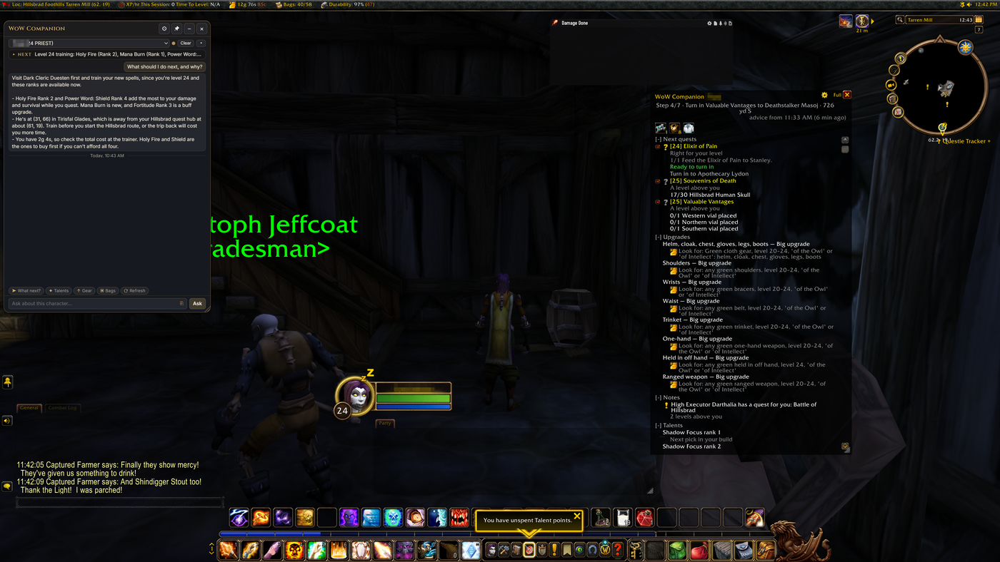
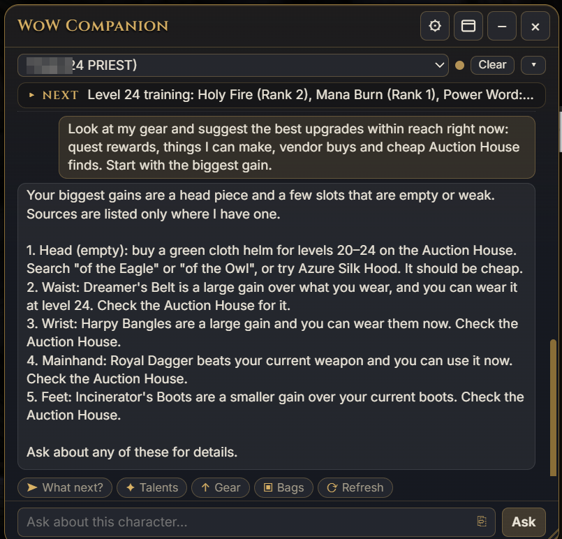
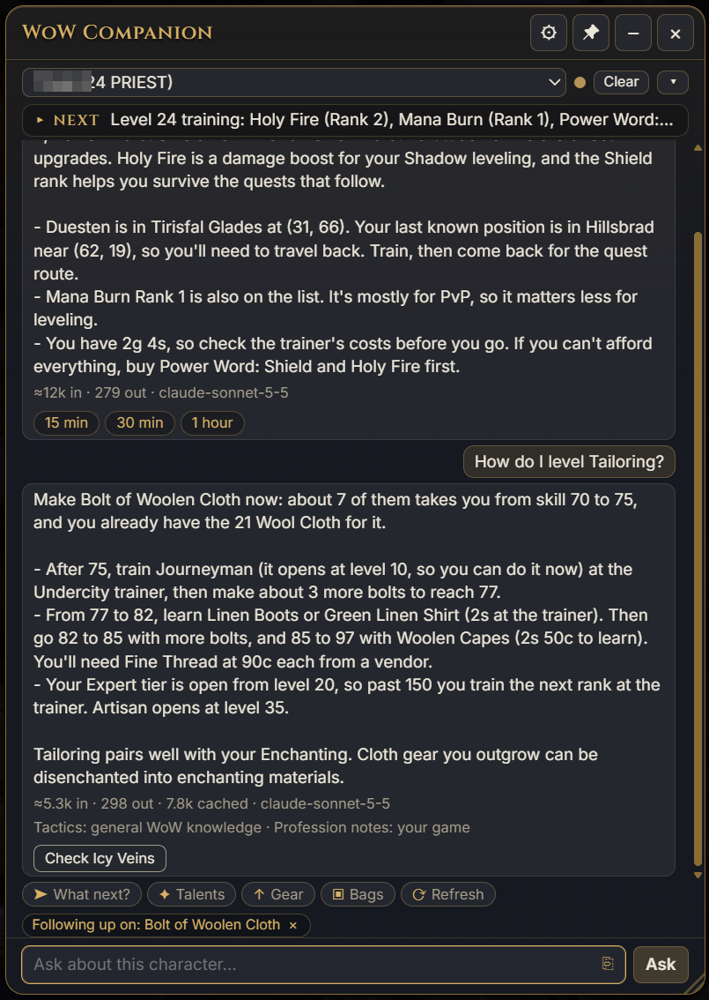
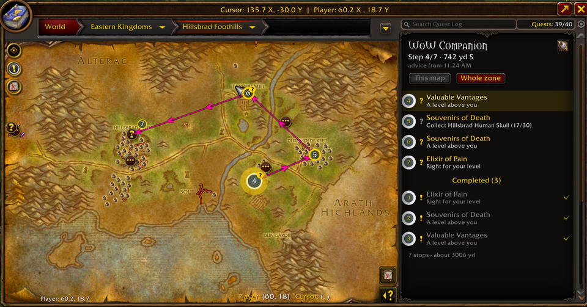

For World of Warcraft: Forever
The AI companion that knows your character
Ask it what to do next, which gear to keep or how to level Tailoring. It answers from your quests, bags and talents, then draws the route on your in-game map.
Free, for Windows 10 and 11 (64-bit). You'll need the game installed too.


What should I do next?
What you need
Before you start
- A Windows PC (Windows 10 or 11, 64-bit) with WoW: Forever installed.
- To ask questions, an account with an AI service, like Claude or ChatGPT. Your plan doesn't need one.
Works without AI
The app builds your quest plan and draws the route on your map, and keeps the in-game panel up to date with your next steps, gear upgrades and talent points. It works from what your character has and the game's own quest and item data, so no AI account is needed. Just keep the app running while you play.
Uses your AI
Asking questions in the app's chat, like "What should I do next, and why?" or "How do I level Tailoring?". WoW Companion doesn't come with its own AI. It uses an account you already have, or a free model on your own PC. See AI options.
Ask it…
Example answers to the kinds of questions you can ask.
What should I do next?
You are level 16 and have new spells waiting: Flamestrike (Rank 1) and Arcane Missiles (Rank 2). Visit your mage trainer first and learn them. Then follow the Barrens quests on your route. They are numbered on your map.
Which of my gear should I keep?
Your new Pagan Vest, a green chest piece you can wear at level 21, rolled “of the Eagle”. That suffix adds Intellect and Stamina, which suits a caster who wants to survive longer, so wear it. If a vest rolls a suffix with no Intellect, keep your current chest piece instead.
How do I level Tailoring?
You are at 112. Keep making Bolts of Silk Cloth up to 120, and keep every bolt, because you will use them up to about 185. Then make 5 Azure Silk Hoods (2 Bolts of Silk Cloth, 2 Blue Dye and 1 Fine Thread each) to reach 125. To train past 150 you will need Expert Tailoring. Josef Gregorian in Undercity teaches it (level 20, 50 silver).
Asking questions uses your own AI account. See AI options. Your plan, the map route and the in-game panel don't need one.
And the rest of the plan
Next steps and quests
A short plan of what to do next, with numbered stops on your map. Every quest in your log shows up once: in the run, in a trip to another zone, or parked with the reason. The plan reaches up to 3 levels above you, and you can change that or turn the limit off. A quest above it says when you can do it, like “level 40, doable around 37”, and an elite quest waits for a group. A turn-in or delivery close to you comes first. A quest that only asks you to find a place, like “Locate the hunters' camp”, gets a stop on your map when the game's quest data knows where that place is. Hide a quest you do not want and it moves to Later as “Hidden by you”. When it sends you to your class trainer, it picks the city a flight from your zone reaches, and can name the flight point to fly from, or say that your hearthstone is already bound in that city.
Your AI is also told to think in routes and errands: fold an errand into a stop you are already making, and avoid back-trips and wasted flights.
The plan also folds errands into stops you already make: restocking, repairing, selling junk and mailing things to another character. In the in-game panel an errand shows as a dim “While you're here” line under its stop, with a small icon (a bag, a hammer, a coin or an envelope) and the NPC's name when there is one. An errand with no stop of its own is a numbered row like any other. The stop's map tooltip adds “+ 1 errand”.
Tell it how long you can play, like “I've got 30 minutes” or “an hour and a half”, and it builds a short loop from your route: ready turn-ins first, then the work that pays the most XP for the time, never a quest that needs a group. It says about how long the loop takes and how much XP to expect. Under a What should I do next? answer, the 15 min, 30 min and 1 hour buttons ask for a plan that fits that time. Ask about a quest and it also says when players tagged it as a group or dungeon quest. The game data holds no group size and no minimum level for a quest, so it says that and does not guess. Ask “Is this quest worth it?” or “What should I abandon?” and it rates each quest in your log by the XP it pays for the time it takes. When your log is full, it names the quests to drop first. It never offers to drop one that is ready to turn in.

Gear upgrades
It weighs the real stats on your items, like Intellect, Stamina and armor, and not only item level. A tank's picks count Defense Rating, a damage dealer's count Hit and Crit Rating, and a healer's count Crit Rating and mana per five seconds. If it does not know an item you wear, it says so and does not rank upgrades against it. Then it tells you where an upgrade comes from or how to make it. If a weapon needs a skill you have not trained, it says where to train it. Ask where to farm an item and it can also say what a vendor pays for it. The game data has no Auction House prices, so it gives no gold per hour. When the game data has nothing on a question, such as gold making, fishing pools, a riding trainer, battleground honor, set bonuses, rare spawns, drop odds, escort quests or timed quests, it says so and does not guess. Ask about a faction and it gives your own standing and the points left to the next one. It names no reputation grind route, because the game data has none. Put an item's name in square brackets, like [Pagan Vest], and ask whether to Need or Greed on it. It says which, and how the item binds. Ask about its item level, required level or whether it can be traded and you get the same from the game data, for up to three items at a time. Ask about an item set and it lists the pieces the game data holds, never the bonus. Ask about a dungeon by its short name, like BRD, UBRS or SFK, and it finds it. A part of a name that fits several, like Blackrock, lists them and does not guess. Press Bags on the quick bar above the ask box and your AI gives a short list of what to sell, keep, toss or mail to your other characters, each with a reason. A piece that is bound to you is never offered for mailing, and an item a quest in your log needs is never offered for selling, tossing or mailing. A profession tool you need, like a pick, hammer, knife or pole, and a bag you can use are kept too. So are class reagents, a hunter's pet food and a rogue's lockboxes, or they are mailed to an alt of that class. An item that starts a quest you have not taken yet is kept too. A quest item is never mailed, because the game does not allow it. Nothing is sold or mailed for you. Ask “Who sells poison?” or “Which vendor is here?” and it names the NPC and what they sell.

Talent points for your spec
Your unspent talent points come first. A pick for them, one at a time, comes only from a leveling build that has been checked. No spec has a checked build yet, so for now the app says so and does not guess.

Profession leveling plans
Step-by-step routes for raising each profession from the WoW Forever guides. Materials are counted from your bags and bank, and it names your faction's trainer when the game data has one. Plans leave out specialist recipes you have not learned and crafts that run on a cooldown. Herbalism, Mining, Skinning and Fishing get the zones to gather in. If you are missing a tool, like a Mining Pick or a Fishing Pole, it says so and where to buy it.

Map pins and an in-game panel
Your plan shows on the world map and the minimap, and in a small panel you can open with
/wowc. Each quest row shows the quest's level, colored by how hard it is for you, then what to do, like Turn in or Pick up. The rows are grouped as NOW, HERE, TRIPS, FIND and LATER. NOW and HERE follow you: the stops on your map are put in order again from where you stand, and a turn-in never comes before its objective. Every stop has one number, the same on the map badge, the map tooltip and the panel, with NOW as number 1. A step with no spot on the map is numbered last and marked “(no map spot)”. When two stops are far apart, a short dim line between them says to ride, fly or take a boat. When your next stop is far away and a flight master you know saves real walking, the panel hints at the flight. Click the small x on a row, or right-click it, to hide that quest from the plan. In your faction's capital it also lists errands, like training new ranks and opening your bank. On the map's list, a button switches between This map and All zones, and Whole zone puts the map back to the whole zone. Travel steps name the real place, never a map number, and a trip into a dungeon names the zone where its entrance is.


How it works
The app reads your game, builds your plan, and the addon shows it in game. Questions go to your AI.
Install the app
Download it and run the installer.
It sets up the addon
The app's setup checklist can put the in-game addon in place for you.
Play and glance
Play as usual. Keep the app running, type
/reloadnow and then to refresh your plan, and glance at the panel.
Free and open source
WoW Companion is free. The code is on GitHub for anyone to read. It only reads what the game shows you and never plays for you.